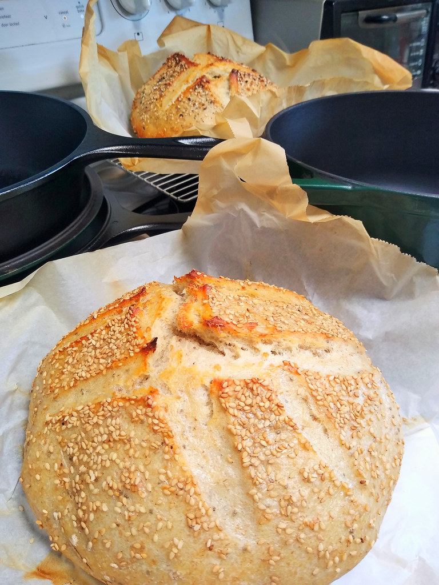
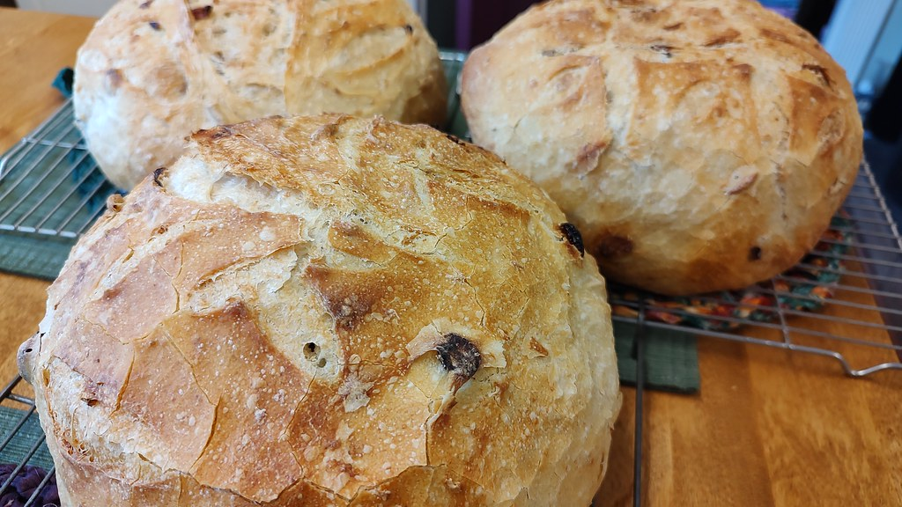

二

霧が晴れて、里が見える
真田町は、杉や唐松の山林と畑に囲まれた、山あいの静かな土地です。
若林パンは、その里の一角に窯を構え、毎日の暮らしに寄り添うパンを焼いています。
焼き上がりや営業日は、Instagramで随時お知らせしていますので、お出かけ前にひと目のぞいてみてください。
三
山からの便り
一
山あいの静かな環境で
静かな山の空気の中、ゆっくりと窯の時間が流れています。
二
ひとつひとつ、丁寧に
一つ一つの生地と向き合い、丁寧に仕込んでいます。
三
地域に根づいた小さな窯として
里の暮らしに寄り添う、小さな窯であり続けたいと思っています。
四
窯あかりの時間
食事パン、サクサクの焼き菓子、季節ごとの菓子パンまで。
窯あかりの灯る時間に、さまざまな種類のパンが焼き上がります。
品目や価格は季節や日によって変わりますので、詳しくはInstagramでご確認ください。

食事パン
毎日の食卓に並ぶ、素朴な食事パン。

サクサクの焼き菓子
クロワッサンなど、幾重にも層を重ねたサクサクの焼き菓子。

季節の菓子パン
季節ごとに顔を見せる、小さな楽しみの菓子パン。